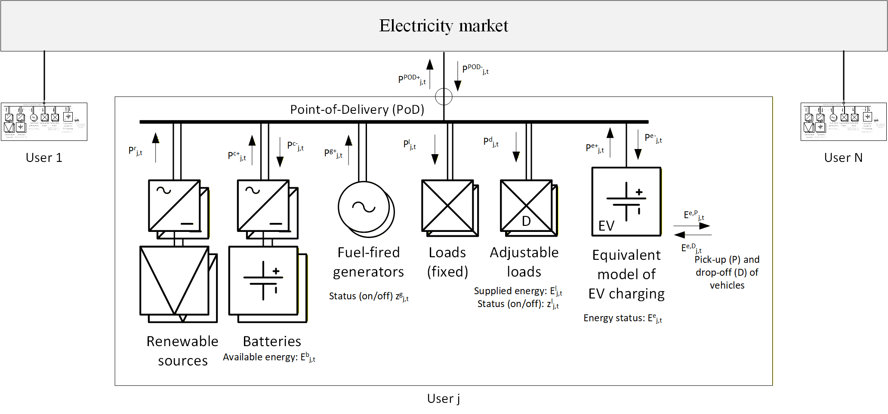

Architecture of the model
Introduction
The optimization model implemented in EnergyCommunity.jl is based on a Mixed-Integer Linear Programming (MILP) model implemented in JuMP.jl, accounting for:
- Technical operation of assets (loads, PV, storage, flexible resources).
- Market interaction with the main grid (imports/exports, tariffs).
- Energy shared among users of the community.
- Configuration of the EC: non-cooperative, aggregated-non-cooperative, cooperative.
In the following, we provide a general description of the mathematical model, starting from the techno-economic model that is valid for all EC configurations, and then describing the specific models suited for the specific configurations.
Please refer to the following references for more details:
- D. Fioriti, G. Bigi, A. Frangioni, M. Passacantando and D. Poli, "Fair Least Core: Efficient, Stable and Unique Game-Theoretic Reward Allocation in Energy Communities by Row-Generation," in IEEE Transactions on Energy Markets, Policy and Regulation, vol. 3, no. 2, pp. 170-181, June 2025, doi: 10.1109/TEMPR.2024.3495237.
- D. Fioriti, A. Frangioni, D. Poli, "Optimal sizing of energy communities with fair revenue sharing and exit clauses: Value, role and business model of aggregators and users," in Applied Energy, vol. 299, 2021, 117328,doi: 10.1016/j.apenergy.2021.117328
Techno-economic model
The techno-economic model of the Energy Community (EC) is based on the model depicted in the figure below, which highlights the general structure of components available by each user $j \in I$, where $I$ is the set of community members, and energy flows. In the following, we first describe the user's expenses and then the main constraints of the model.

Energy Community configurations
The mathematical model implemented in EnergyCommunity.jl can be configured to represent different types of Energy Communities (ECs), namely:
Non-cooperative EC (NC): In the
NCconfiguration, each user $j \in I$ optimizes its own energy system independently, without considering energy sharing with other community members. The objective function for each user is to maximize its own Net Present Value (NPV) based on individual energy consumption, generation, and costs. Let ${SW}^{NC}(J) = \sum_{j \in J} \mathrm{NPV}_j$ be the sum of the Net Present Value for all users, then the optimization problem for the Non-Cooperative formulation is formulated as follows:\[\begin{array}{ll} \max & {SW}^{NC}(I) = \sum_{j \in I} \mathrm{NPV}_j \\ \text{s.t.} & \text{Users' power and energy system constraints} \end{array}\]
Note that as the problem is separable for each user $j$, it can be solved independently for each user. However, for simplicity, EnergyCommunity.jl implements the problem as a single optimization problem including all users as shown in the previous equation.
Aggregated Non-cooperative EC (ANC): In the
ANCconfiguration, each user $j \in I$ still optimizes its own energy system independently, but the model allows for the aggregation of certain resources or costs at the community level. This can include shared infrastructure or collective purchasing of energy, leading to potential cost savings for individual users while still maintaining independent optimization. In mathematical terms, the social welfare ${SW}^{ANC}(I)$ of the community is defined as the sum of the individual NPVs of each user plus an additional term $\mathrm{NPV}^{sh}_{NC}(I)$ that accounts for the benefits or costs associated with shared resources or collective actions that naturally occur. The actual optimization problem remains the same as in the Non-Cooperative case, but the overall social welfare is adjusted to reflect the aggregated aspects of the community.\[{SW}^{ANC}(I) = {SW}^{ANC}(I) + \mathrm{NPV}^{sh}_{NC}\]
Cooperative EC (CO): In the
COconfiguration, all users $j \in I$ collaborate to optimize the energy system of the entire community as a whole. The objective function is to maximize the collective NPV of the community, taking into account the energy system of each user havign objective term ${NPV}_j$ and the additional term $\mathrm{NPV}^{sh}$ related to the shared energy. This configuration promotes cooperation and can lead to more efficient energy management and cost savings for all members.\[\begin{array}{ll} \max & {SW}^{CO}(I) = \sum_{j \in I} \mathrm{NPV}_j + \mathrm{NPV}^{sh} \\ \text{s.t.} & \text{Users' power and energy system constraints}\\ & \text{Shared energy constraints} \end{array}\]